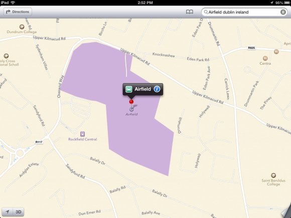
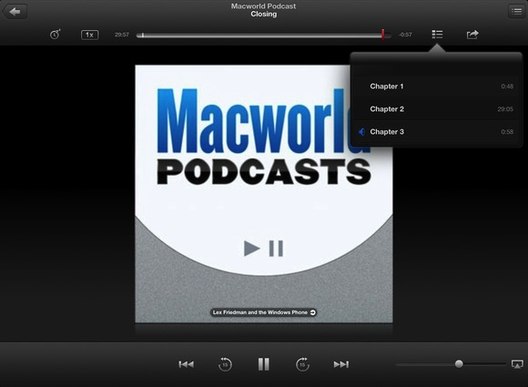
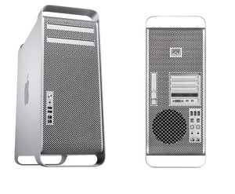
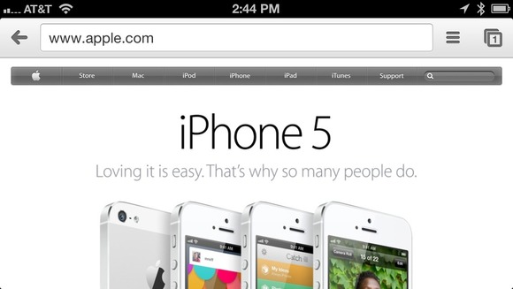

What we expect to see at next week's WWDC
When Apple kicks off next week’s Worldwide Developers Conference with its annual keynote address, we know that the company will unveil new versions of iOS and Mac OS X. But we don’t yet know the specifics of what those updates will include, or what else will be announced—though, as always, the rumor mill is working overtime to suggest everything from updates to Apple’s existing products to Tim Cook’s announcement of an Apple toaster-fridge with new microwave functionality!
While we’ve already told you what we’d like to see in the next versions of OS X and iOS , as well as in a new Mac Pro , there are plenty of other Apple products and services that we might see mentioned during WWDC.
iCloud, iCloud, go away, come again some other day!
Remember: WWDC is a developer conference. And Apple wants developers to love iCloud—though, more often than not, they don’t . Given that iCloud—and especially its deficient data-syncing—is a source of major concern for developers, that should make it a major concern for Apple, too.

We’re optimistic that Apple will address the developers’ sinking syncing feelings. Expect not just announcements of low-level features (such as improved, more reliable, even rewritten APIs), but user-facing ones, as well: That could mean a revamped iCloud document-chooser interface or maybe—if we allow ourselves to dream a little—an iDisk-like iCloud app for both iOS and the Mac, which might bring a smidgen of Dropbox-like ubiquity to Apple’s online service.
Getting out of a paper bag with two hands and Apple Maps
Maps may be the least welcome piece of software that Apple has released since that OS update that accidentally erased all of your external hard drives. While Tim Cook has already taken to Apple’s site to acknowledge the frustration , it’s time for Apple to go back on the offensive and show developers—and users—that it’s been spending the last year working to correct these problems.

Location information should be the primary matter here. Apple’s Maps has been roundly knocked for not providing the same level of accuracy as its Google-powered predecessor, and Cupertino needs to quash that perception if it’s going to have any chance of putting this issue behind it. Also on the list should be the addition of public transportation information; offering the ability to hook into third-party apps was a good stopgap, but ceding that feature can’t go on indefinitely—why would anybody want to use Maps and Google Maps, when they can just use one app?
An in-your-face interface overhaul
There’s no doubt that the look of both OS X and iOS will continue to evolve, and we hope to get our first peeks at those new looks at WWDC. Some are predicting a dramatic visual overhaul, particularly on the iOS side, with an emphasis on a Windows Phone-style flat design. We don’t expect quite that dramatic of a makeover. For one, senior vice president Jony Ive—who now oversees Apple’s software design—just hasn’t been in that role long enough to institute a truly sweeping change of that magnitude. And Apple’s never been one to copy other design trends; the company has always preferred to set its own aesthetic.

So yes, iOS 7 will likely offer less skeuomorphism than its predecessors. If you look to the recent evolution of Apple’s app design, as seen in the latest update to the Podcasts app or in the WWDC 2013 app , there’s a trend towards less flashiness and more subtlety. Some have pointed to the evolution of OS X—from the more colorful and bubbly Aqua interface to Mountain Lion’s more muted design—as a smart comparison: while the Mac OS has undergone changes in the last decade, it’s remained recognizable to users.
Speaking of the Mac, expect a similar—if less obvious—continuation of the design evolution. Apple can’t seem to resist tweaking its design between major OS X releases, and some elements (title bars, tabs, buttons, icons) always seem to get at least minor makeovers each time around.
Big Mac attack

Traditional PC sales have been slumping for a while now, and while the Mac has still held fairly strong, there’s no question that the market for personal computers is shrinking as mobile devices like smartphones and tablets get more popular. Steve Jobs once compared the two to trucks and cars, respectively, so it’s time for Apple to demonstrate how the Mac is still the best truck on the market.
Many expect to see a new Mac Pro —or a suitable replacement—at the event. That’s a perfect opportunity for Apple to show what it’s got up its sleeves for the future of the Mac platform. Technologies like Thunderbolt (and the recently announced Thunderbolt 2) are all well and good, but the market’s also been slow to adopt those technologies; and, more to the point, people are increasingly accustomed to being wireless.
A Mac Pro replacement could be the first truly new Mac model we’ve seen since the introduction of the MacBook Air in 2008; it’s an opportunity for Apple to define what the Mac means in this day and age.
Putting the ‘app’ in Apple TV?
While people should definitely not get their hopes up for the mythical Apple television set to make an appearance at WWDC, it’s possible that we could see some minor announcements about the company’s favorite hobby.
One persistent rumor is that Apple will finally open up its set-top box to third-party developers looking to make apps, which would mesh well with a WWDC debut. But given the recent announcement that the CW will have its own app on the home screen , our money’s on Apple keeping tighter control of that platform for the time being.
Turn the iRadio up for that sweet sound
Much virtual ink has been spilled on Apple’s alleged entry into the music-streaming service. With reports of deals between Cupertino and record labels leaking out like summer movie-plot spoilers, it would be foolish to assume that Apple is not working on such an offering—but that doesn’t mean we’ll see it at WWDC. After all, the company has established a pattern of rolling out music- and media-related announcements in the fall, just in time for the holiday season, and developers have little to be interested in from a music-streaming service (except, of course, in their position as consumers themselves). But, in a lesson that we learned from Sean Connery, we will never say never again.
Innermost thoughts
Developers would certainly love to have more access to all the things that Apple has access to. On iOS, this means that developers are hoping for a Notification Center widgets API, so that they can offer their own modules alongside (or instead of) Apple’s weather and stock tickers. They’d love to get custom, widget-style notifications on the lock screen, too. But Apple, with its vaunted philosophy of simplicity, may not yet be ready to share with developers the world over.
Speaking of access, developers also want to integrate their apps with Siri on iOS (and on OS X, if the virtual assistant comes to the Mac). But that’s a goal that has its fair share of challenges , and it’s unclear whether Apple has put the time and effort into overcoming those yet.

Finally, software makers would be thrilled if Apple allowed users to specify third-party apps as defaults for certain tasks, such as email, calendaring, and Web browsing. Tim Cook recently said at the D11 conference that people will probably see Apple open up in the future, “but not to the degree that we put the customer at risk of having a bad experience.” Does a “bad experience” include using Chrome instead of Safari for your default iPhone Web browser? We’ll find out next week.

 Amazon Shop buttons are programmatically attached to all reviews, regardless of products' final review scores. Our parent company, IDG, receives advertisement revenue for shopping activity generated by the links. Because the buttons are attached programmatically, they should not be interpreted as editorial endorsements.
Amazon Shop buttons are programmatically attached to all reviews, regardless of products' final review scores. Our parent company, IDG, receives advertisement revenue for shopping activity generated by the links. Because the buttons are attached programmatically, they should not be interpreted as editorial endorsements.